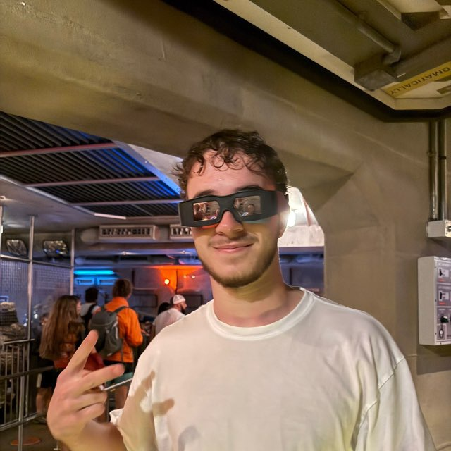
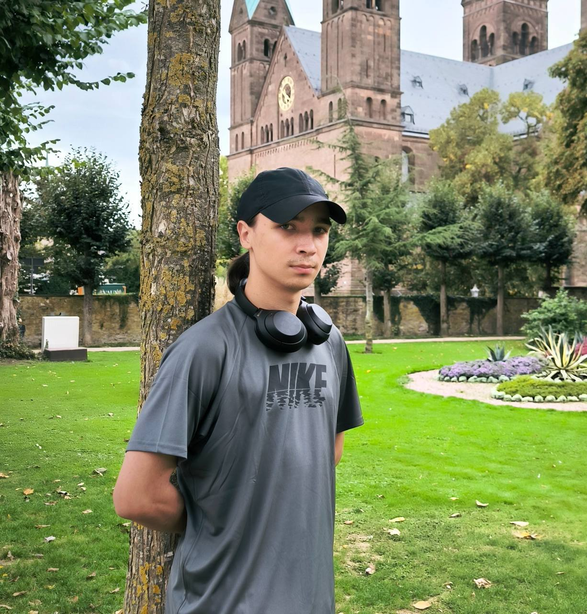

Náš Tím
Stretni ľudí za projektom
Dmytro Loiko
System Administrator
Spravuje servery, siete a zabezpečenie systémov. Skúsenosti s Linux, networking a monitoring nástrojmi.
Linux
Networking
Security
Monitoring
Vladyslav Deinerovych
Frontend Developer
Vytvára responzívne používateľské rozhrania. Pracuje s moderným JavaScript, HTML5 a CSS3.
JavaScript
HTML5
CSS3
React

Pavlo Umanskyi
DevOps Engineer
Stará sa o infraštruktúru, CI/CD pipeline a automatizáciu. Expert na Kubernetes a cloud technológie.
Kubernetes
Docker
AWS
Terraform
Anton Kozar
Backend Developer
Špecializuje sa na serverové technológie, databázy a API dizajn. Má skúsenosti s Python, Node.js a PostgreSQL.
Python
Node.js
PostgreSQL
Docker

Denys Semych
Full Stack Developer
Kombinuje frontend a backend zručnosti. Pracuje na komplexných webových aplikáciách od začiatku do konca.
JavaScript
Python
SQL
Git